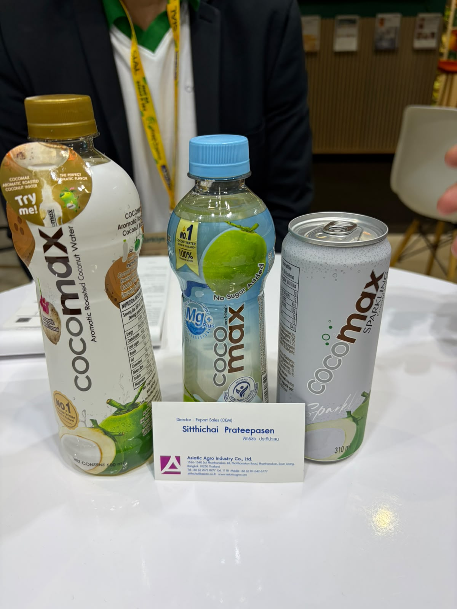
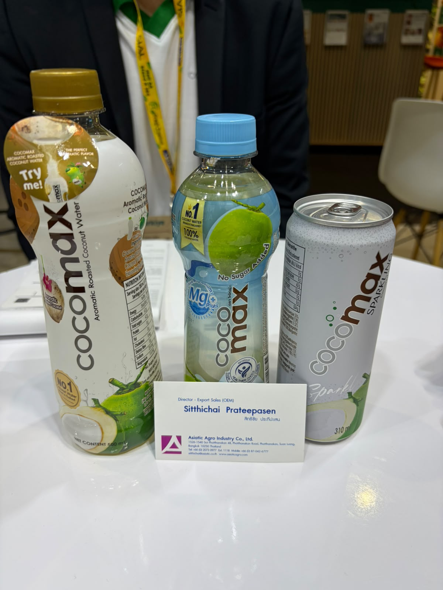
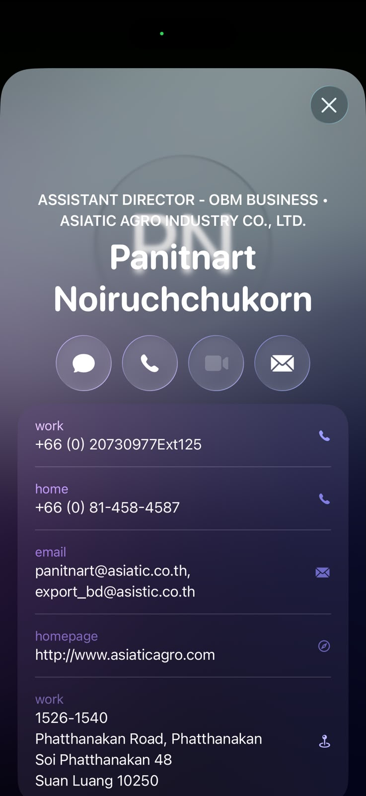
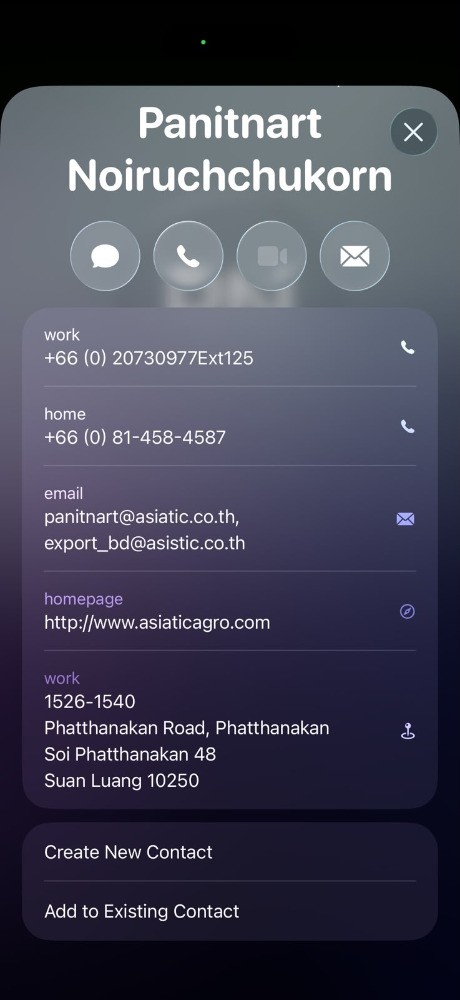
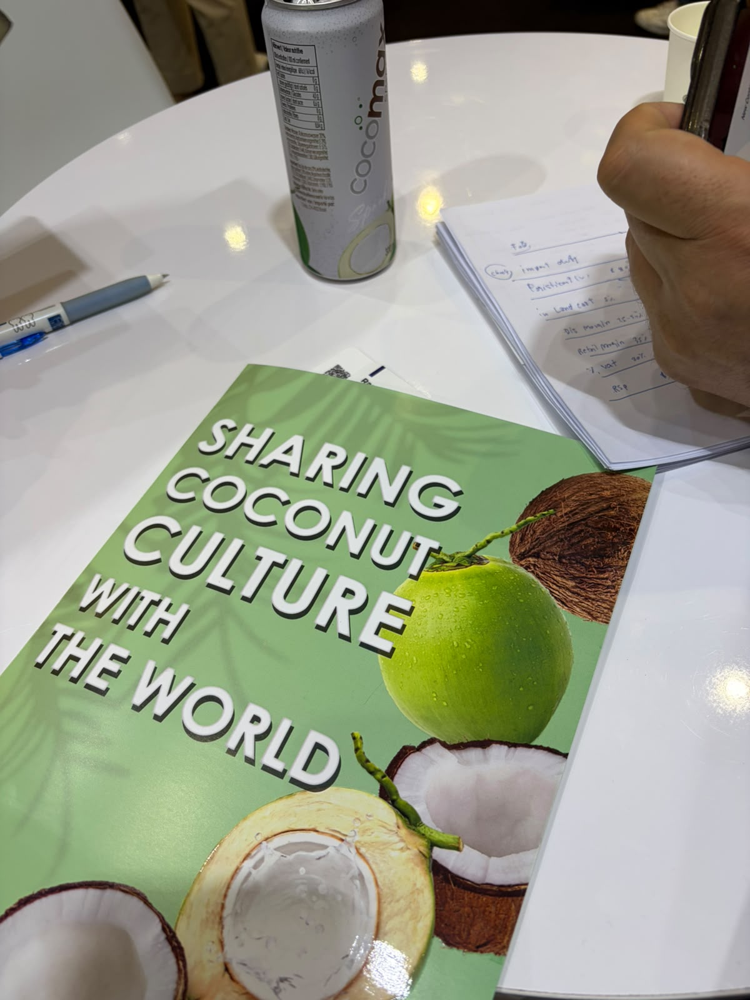
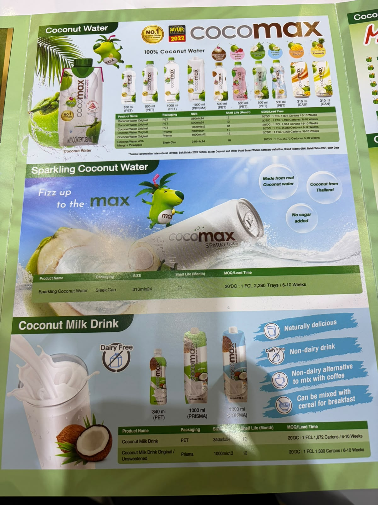
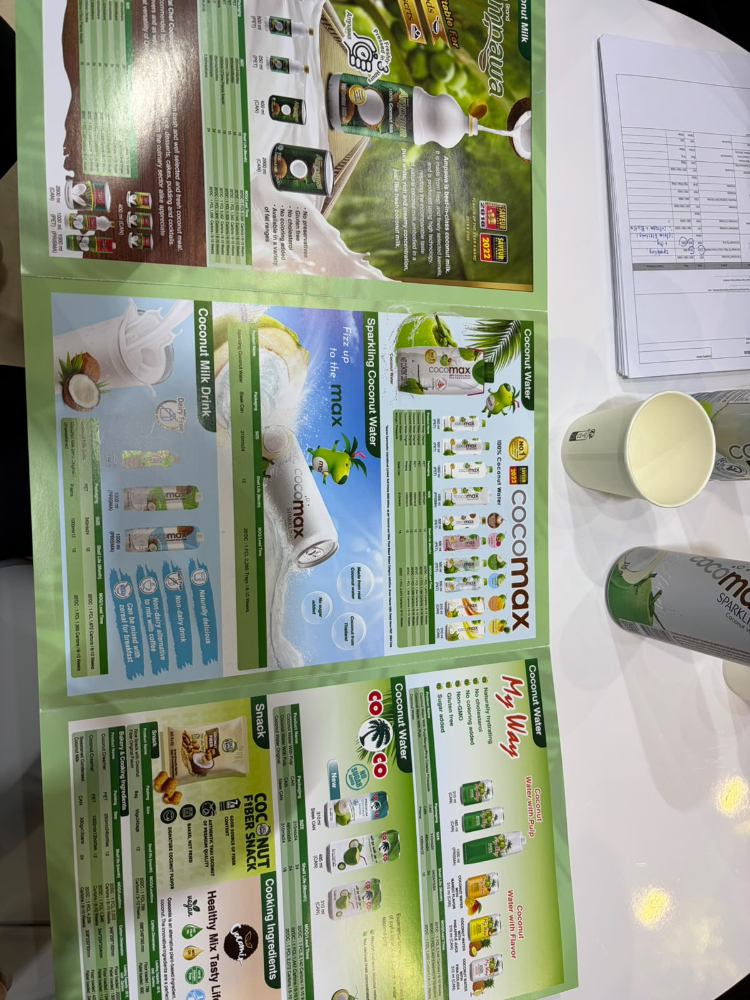

Cocomax / Asiatic Agro Industry
مياه جوز هند
الوكيل الحصري في السعودية
تدرج ALGT علامة Cocomax ضمن قطاع الأغذية ولديها مركز توزيع في الرياض، لكن الصفحة لا تربط العلامة تحديدًا بحقوق حصرية سعودية. لذا لم تُثبت وكالة حصرية.
- الجهة
- ALGT — جهة إقليمية محتملة للاستفسار، وليست وكالة سعودية مثبتة
- نطاق الدليل
- Cocomax فقط؛ حصرية الألعاب المذكورة في موقع ALGT لا تنطبق على الأغذية
- تاريخ البحث
- 21 أكتوبر 2026
الخطوة التالية: طلب تأكيد مكتوب باسم الوكيل، ونطاق السعودية، والعلامات والأصناف وقنوات البيع، وسريان الحصرية.
المصادر وطريقة التحقق
- ALGT — العلامات والحضور الإقليمي
Cocomax ضمن الأغذية، وحضور سعودي للمجموعة؛ نطاق توزيع العلامة غير محدد.
بحث باسم الشركة والعلامات مع السعودية والتوزيع والوكالة، ومراجعة المصادر العامة المتاحة. لم يتم التواصل مع الشركة أو الاطلاع على عقد وكالة.
المنتجات والمجال
- مياه جوز الهند المحمص العطري
- مياه جوز الهند Mg Plus دون سكر مضاف وفق الملصق
- Cocomax Sparkling في علبة 310 مل
- مياه جوز الهند ومشروبات جوز الهند الفوارة وحليب جوز الهند كما تظهر بالكتيب
بطاقة الملف
الجناح
غير مثبت
العنوان
غير موضح
حالة المتابعة
صور وبيانات المعرض محفوظة — لم يُعتمد توريد
وسائل التواصل
Sitthichai Prateepasen
Director — Export Sales (OEM)
بطاقة المعرض المصورة — 19 أكتوبر 2026
Panitnart Noiruchchukorn
Assistant Director — OBM Business
بطاقة مصورة ضمن دفعة المستخدم المستلمة في 21 أكتوبر 2026
ملاحظات الملف
البطاقة باسم Asiatic Agro Industry Co., Ltd. لم تُنقل أرقام أو بريد غير واضحين؛ البطاقة الأصلية متاحة للتكبير. القاعة والجناح غير ظاهرين. البريد الثاني مكتوب في الصورة export_bd@asistic.co.th؛ يحتاج تأكيد النطاق قبل استخدامه.
أوصاف المنتجات والفوائد الواردة على العبوات منسوبة للمصنع، وليست تقييمًا طبيًا أو اعتمادًا للتوريد.
الصور وبطاقات الأعمال
اضغط على الصورة لفتح الأصل بالحجم الكامل.














